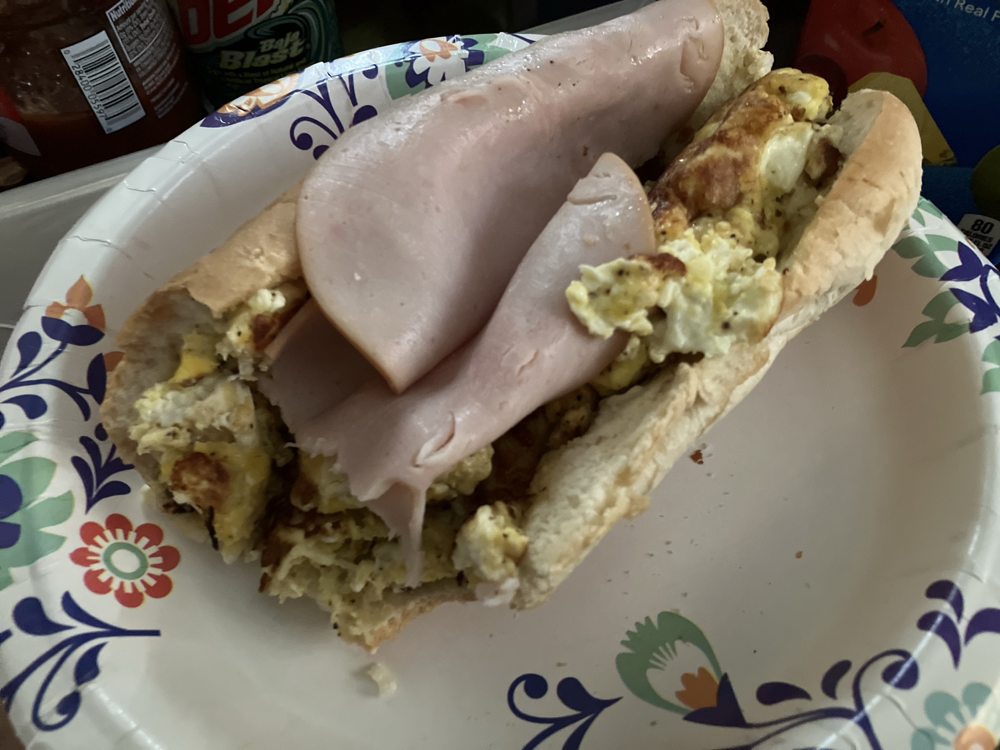

How to make my Egg, Turkey and Cheese Sandwich
A sandwich so good I forgot to take a photo of it before I bit into it!

Description
This delicious sandwich can spruce up your morning and get you started on the right foot!
Packed with lots of protein and flavor, from the eggs and mozzarella cheese to the smoked turkey slices,
this sandwich will keep you full and energized throughout
your day!
Ingredients
- one tablespoon of minced garlic (pre-minced in a jar, olive oil type preferred)
- five eggs
- two slices of oven-roasted turkey breast (any kind is fine)
- garlic salt
- black pepper
- two tablespoons of butter
- two cups of shredded mozzarella cheese
Steps (Egg Mixture)
- In a heated skillet, melt the two tablespoons of butter. Allow two to three minutes for the butter to heat up
- Add your minced garlic to the skillet
- Crack and add the five eggs into the skillet
- Add the black pepper and garlic salt
- Scramble the mixture and cook for 3 to 4 minutes
- Add the mozzarella cheese to the mixture, mix into mixture and cook for another 2 to 3 minutes (making sure to flip the entire mixture every now and then)
- turn off heat and shift your attention to the bread!
Steps (Bread)
- Take your bread and open it
- sprinkle a generous helping of mozzarella cheese on both sides
- put the bread in a microwave-safe plate. Put the bread in the microwave for one minute or until cheese is melted to satisfaction
- Remove bread from microwave. Add two turkey slices
- Add the egg mixture that was prepared previously (it should have cooled down enough by now
- (Optional) garnish with more mozzarella cheese
- Close the sandwich. The sandwich is now complete!
And there you have it! A delicious way to start your day!